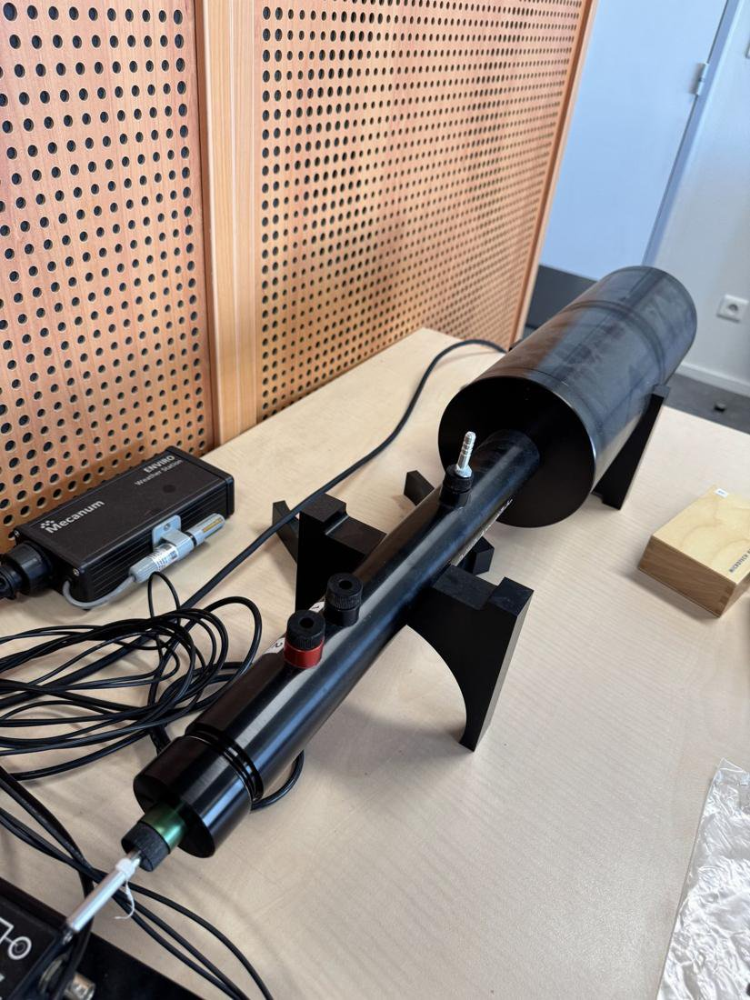
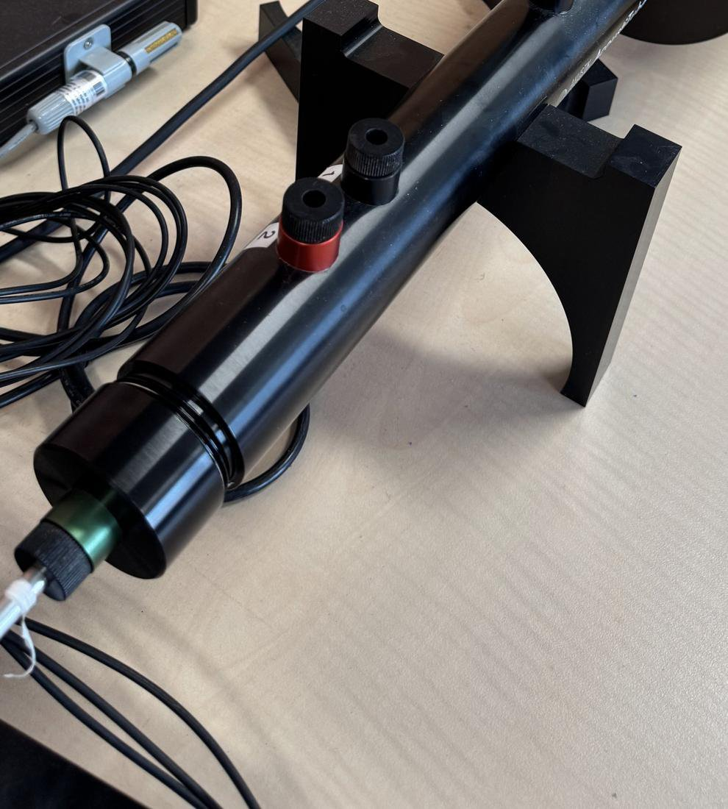
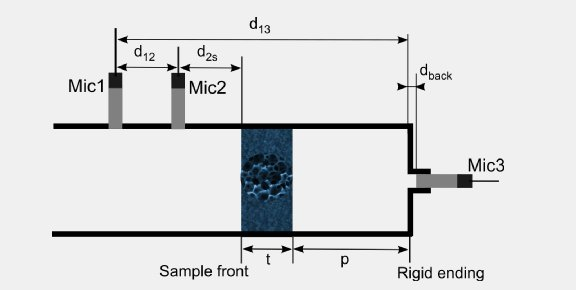
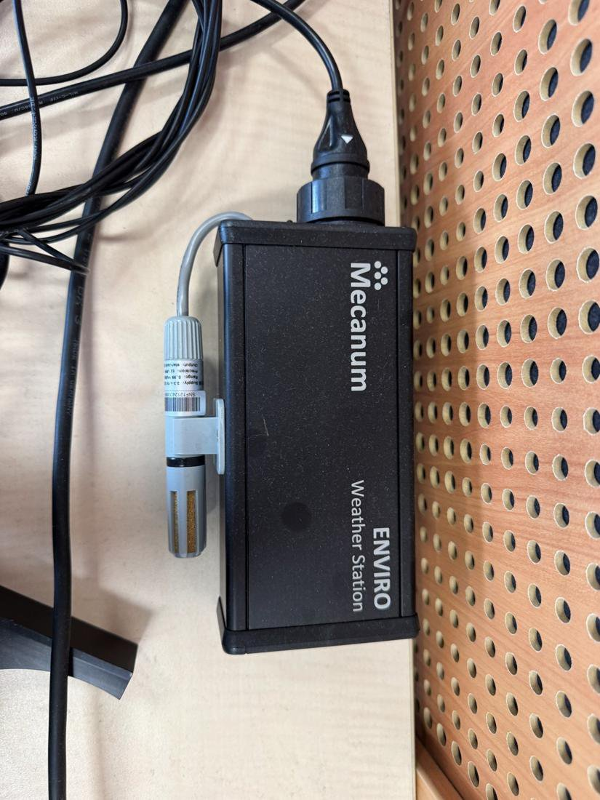
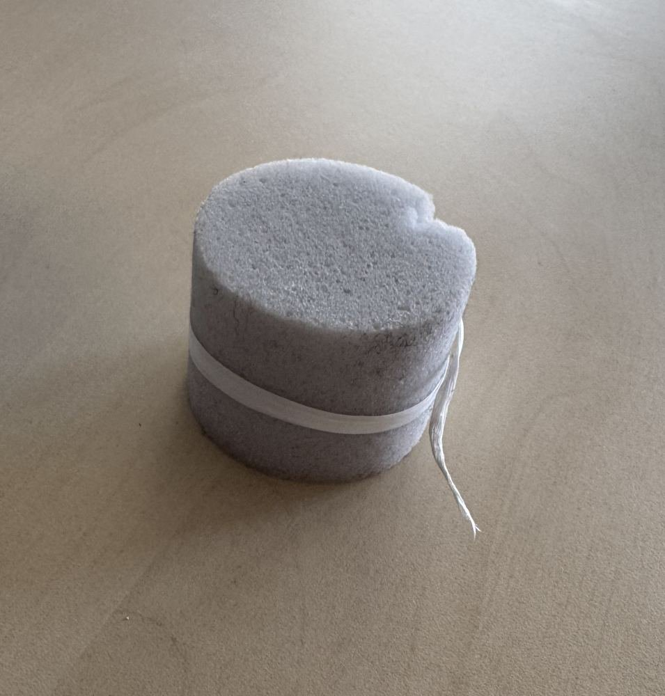
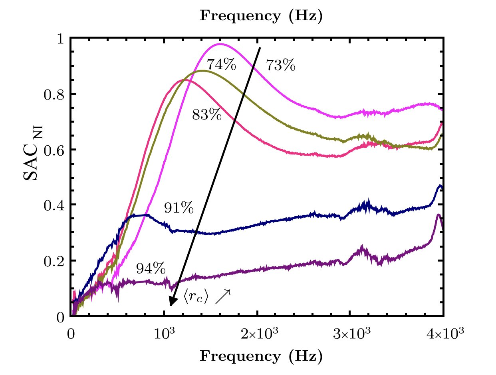

منصة اختبار · مختبر MSME (UMR 8208 CNRS)، جامعة غوستاف إيفل · 2026
أنبوب المعاوقة — الامتصاص الصوتي
ISO 10534-2طريقة دوال النقل3 ميكروفوناتمعايرة

الملخص
يرسل أنبوب المعاوقة (أنبوب كونت) موجة صوتية مستوية نحو عيّنة من مادة مسامية — رغويات، صوف، مواد ليفية أو حبيبية — ويقيس الجزء من الطاقة الذي يُمتص بدل أن ينعكس، ترددًا بتردد. ويعطي ميكروفون ثالث خلف العيّنة الخصائص الحجمية للمادة (الكثافة ومعامل الانضغاط الديناميكيان)، وهي مدخلات نماذج المواد المسامية.
توليت مسؤولية المنصة وأعدت ضبط إعداداتها، وكتبت دفتر مختبر من 39 صفحة (النسخة 1.2): النظرية، المعدات، فحص الميكروفونات، المعايرة اليومية، تحضير العيّنات، القياس وتشخيص الأعطال.
الجانب التجريبي
لا تصح الطريقة إلا إذا تم التحقق من فرضياتها: موجات مستوية (التردد الأعلى يحدده التباعد 35 مم بين الميكروفونات، والنطاق المفيد 50–4655 هرتز)، ومعايرة بين الميكروفونات مرة في كل يوم قياس بتبديل مواضعها، وتسجيل الحرارة والضغط بمحطة أرصاد (يحددان سرعة الصوت ومعاوقة الهواء)، وقياس السماكة بالقدم القنوية، وإحكام العيّنة بشريط PTFE. وأي قيمة α أقل من 0 أو أكبر من 1 تُعامل كخلل في القياس لا كنتيجة.
المنهجية والمعادلات
معامل الامتصاص انطلاقًا من معامل الانعكاس المركّب \(R\) على سطح العيّنة:
$$\alpha(\omega)=1-|R|^{2}$$طريقة دوال النقل (ISO 10534-2): من \(H_{12}=p(x_2)/p(x_1)\)، مع التباعد بين الميكروفونات \(s\) والمسافة \(L\) إلى العيّنة (\(q_0=\omega/c_0\)):
$$R=e^{2jq_0L}\,\frac{H_{12}-e^{-jq_0s}}{e^{jq_0s}-H_{12}}$$بالميكروفون الثالث (\(H_{23}\))، يعطي عدد الموجة \(q_c\) والمعاوقة المميزة \(Z_c\) للمادة خصائص المائع المكافئ:
$$\rho_{eq}=\frac{Z_c\,q_c}{\omega},\qquad K_{eq}=\frac{\omega\,Z_c}{q_c}$$صلاحية الموجات المستوية لأنبوب قطره \(D\): \(f_u<0.58\,c_0/D\)، \(s<0.45\,c_0/f_u\)، \(s>0.05\,c_0/f_l\).
الأشكال










